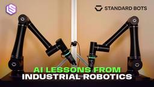

Latent.Space
https://www.latent.space
The AI Engineer newsletter + Top technical AI podcast. How leading labs build Agents, Models, Infra, & AI for Science. See https://latent.space/about for highlights from Greg Brockman, Andrej Karpathy, George Hotz, Simon Willison, Soumith Chintala et al! Click to read Latent.Space, a Substack publication with hundreds of thousands of subscribers.
フィード


[AINews] Agents disprove Polysemanticity; greatly improve Interpretability & Alignment
Latent.Space
Nick Cammarata out of nowhere with some major claims!
1日前

[AINews] Modal’s $1B ARR, $16B Series D makes it NYC’s newest AI Infra Decacorn, 3x usage and 3x valuation in 5 months, 15x in 1 yr
Latent.Space
Sandboxes are all you need.
2日前

Crossing the Threshold: How OpenAI and Anthropic Approach Autonomy and Safety in Financial Agents
Latent.Space
At AI Engineer New York, frontier labs and financial firms explored how to give agents useful autonomy while keeping consequential decisions under control.
3日前

Lab-in-the-Loop at Compute Speed — Ian Quigley, Leash Bio
Latent.Space
How Leash Bio tamed DELs, the assay that traumatizes everyone, and used the data to catch cheating models. And why that same data is perfect for AI agents learning to think like chemists.
3日前

[AINews] AI Engineer NYC: Gemini 4 Argon, Vals AI Benchmarks
Latent.Space
Gemini 4 Argon went GA today, but we already gave it title story 2 weeks ago and most benchmarks, like CursorBench, simply independently confirm their claims.
3日前

Dyna-2: General Purpose Physical Agents with Hour-Long Autonomy — Jason Ma, Dyna Robotics
Latent.Space
Our first robotics pod with Dyna’s Chief Scientist on their big bet on World Action Models & the Next Frontier of Physical AI
4日前

[AINews] Meta Muse Wonder & Wonder Full: MSL’s Claude 5.5-tier Frontier Model
Latent.Space
MSL’s emergence as a frontier lab is finally complete.
4日前

How Anthropic’s Dynamic Workflows Coordinate Claude Agents (Updated with video!)
Latent.Space
At AI Engineer New York, Anthropic drew on lessons from Unix and Linux to explain how agents can tackle bigger projects without overwhelming developers.
5日前

[Subscriber Exclusive] NYC Subscriber Meetups!
Latent.Space
Tomorrow and Tuesday. If you see this you’re in!
7日前

Building AI for Reliable Execution: Lessons From Industrial Robotics
Latent.Space
Inside Standard Bots’ AI stack, pretrained models learn factory tasks from demonstrations and improve through corrections from real deployments.
7日前
Why AlphaFold Didn't Solve Protein Folding — Pushmeet Kohli, Google DeepMind & Sal Candido, Biohub
Latent.Space
From the Bitter Lesson of AI scaling to the unsolved mysteries of protein folding, Google DeepMind’s Pushmeet Kohli and Biohub’s Sal Candido are rethinking what it takes to build AI that truly understands biology.
8日前

Synthesis Superintelligence: from Semiconductors to Superconductors — Periodic Labs’ Liam Fedus and Ekin Dogus Cubuk
Latent.Space
A special Science pod and Engineering pod crossover.. with Forward Deployed Engineering kicker!
9日前
[AINews] Claude Haiku 5.5 — better than GPT-6 Luna at the same pricing
Latent.Space
yay small models
9日前
Can a Cloud-Native Harness Make Agents Reliable Beyond the Desktop?
Latent.Space
Kubernetes co-creators Craig McLuckie and Joe Beda aim to bring agent harnesses fully into the cloud.
10日前
[AINews] Reflection Beam - 501B-A23B American Open Model
Latent.Space
A small win for US open source
11日前